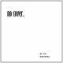
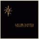
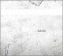
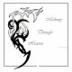
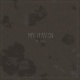

Mind's work_
Click small cover for further info.
 |
Nil'in февраль'09 :: dark ambient | |
| Mare nubium январь'09 :: white ambient | ||
| White dirigable - 2008 март :: epic-rock | ||
| PALE - 2007 декабрь :: instrumental distortions | ||
 |
SOLENS RöTTER - 2006 июнь-август :: folk-pagan-viking | |
 |
...HAVEN - 2006 январь :: epic-rock | |
| OUR AUTUMN - 2005 осень :: dark emotional | ||
| EPIC (mcd) - 2005 зима-весна :: epic | ||
| THE ROOM - 2005 декабрь'05-январь'06 :: rock | ||
 |
MIDWAY THROUGH HEAVEN - 2004 март :: emotional rock | |
 |
MY FALL - 2003 ноябрь :: dark emotional rock | |
 Demos & 7" EP's | ||
| DARK LOVE - ep 2004 сентябрь :: acoustic | ||
| MY ANGEL - ep 2004 апрель :: acoustic | ||
| EYES OF THE DARKNESS - demo 2003 апрель :: acoustic | ||
Singles | ||
| (Óìåðëî) Âëþáëåííîå íåáî - 2006 июль | ||
| Ðîëü âòîðîãî ïëàíà - 2006 июль | ||
| S4-35 (Systemate 2) - 2006 март | ||
| Offal room 1 - 2005 декабрь | ||
| Apocalyp.sys - 2005 май | ||
| Pinsk syndrome - 2005 май | ||
| Meshkavina - 2005 апрель | ||
| Ðàñïëåòàÿ ñíîâèäåíèÿ - 2005 январь | ||
| Ïüÿíûé ïîýò - 2004 ноябрь | ||
| Íåçíàêîìêå - 2003 декабрь | ||
| Ãåðîé - 2003 сентябрь | ||
Covers In progress... | ||
|
||